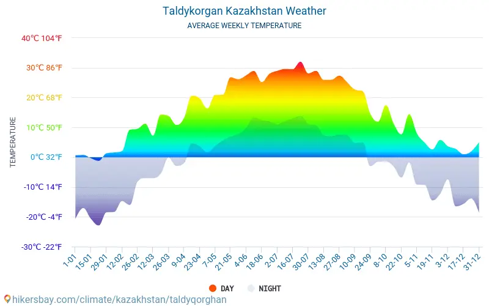

Taldykorgan's Climate
Average high °C
- January - (-4.5)
- February - (-3.1)
- March - (5.0)
- April - (16.0)
- May - (22.6)
- June - (27.2)
- July - (29.9)
- August - (28.8)
- September - (23.5)
- October - (14.7)
- November - (5.9)
- December - (-1.3)
- For whole year - (13.7)
